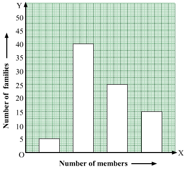

Question:1
The marks of a student in different subjects are given below:
| Subject |
Hindi |
English |
Maths |
Science |
Social science |
| Marks |
43 |
56 |
80 |
65 |
50 |
Draw a bar graph from the above information.
Solution:
We can draw the bar graph by following the given steps:
Step 1.- On a graph paper, draw a horizontal line OX as x-axis and vertical line OY as y-axis.
Step 2.- Along OX, write the names of the subjects at the points that are taken at a uniform gap.
Step 3.- Choose the scale:
1 big division = 10 marks
1 small division = 1 mark
Step 4.- Heights of the various bars are:
Hindi = 43 small divisions = 4 big divisions and 3 small divisions
English = 56 small divisions = 5 big divisions and 6 small divisions
Maths = 80 small divisions = 8 big divisions
Science = 65 small divisions = 6 big divisions and 5 small divisions
Social Science = 50 small divisions = 5 big divisions
Step 5.- Draw bars of equal width on the x-axis. The difference between the two bars should also be the same.
Question:2
The following table shows the favourite sports of 250 students of a school.
Represent the data by a bar graph.
| Sports |
Cricket |
Football |
Tennis |
Badminton |
Swimming |
| No. of students |
75 |
35 |
50 |
25 |
65 |
Solution:
.png)
We can draw the bar graph by following the given steps:
Step 1.- On a graph paper, draw a horizontal line OX as
x-axis and vertical line OY as
y-axis.
Step 2.- Along OX, write the names of the sports at the points that are taken at a uniform gap.
Step 3.- Choose the scale:
1 big division = 10 students
1 small division = 1 student
Step 4.- Heights of the various bars:
Cricket = 75 small divisions = 7 big divisions and 5 small divisions
Football = 35 small divisions = 3 big divisions and 5 small divisions
Tennis = 50 small divisions = 5 big divisions
Badminton = 25 small divisions = 2 big divisions and 5 small divisions
Swimming = 65 small divisions = 6 big divisions and 5 small divisions
Step 5.- Draw bars of equal width on the
x-axis. The difference between the two bars should also be the same.
Question:3
Given below is a table which shows the year wise strength of a school. Represent this data by a bar graph.
| Year |
2005-2006 |
2006-07 |
2007-08 |
2008-09 |
2009-10 |
| No. of students |
800 |
975 |
1100 |
1400 |
1625 |
Solution:
We can draw the bar graph by following the given steps:
Step 1.- On a graph paper, draw a horizontal line OX as
x-axis and vertical line OY as
y-axis.
Step 2.- Along OX, write the years at the points that are taken at a uniform gap.
Step 3.- Choose the scale:
1 big division = 100 students
1 small division = 10 student
Step 4.- Heights of the various bars:
2005−2006 = 80 small divisions = 8 big divisions
2006−2007 = 97.5 small divisions = 9 big divisions and 7.5 small divisions
2007−2008 = 110 small divisions = 11 big divisions
2008−2009 = 140 small divisions = 14 big divisions
2009−2010 = 162.5 small divisions = 16 big divisions and 2.5 small divisions
Step 5.- Draw bars of equal width on the
x-axis. The difference between the two bars should also be the same.
We get the following bar graph:
.png)
Question:4
The following table shows the number of scooters produced by a company during six consecutive years. Draw a bar graph to represent this data.
| Year |
2004 |
2005 |
2006 |
2007 |
2008 |
2009 |
| No. of scooters |
11000 |
14000 |
12500 |
17500 |
15000 |
24000 |
Solution:
We can draw the bar graph by following the given steps:-
Step 1.- On a graph paper, draw a horizontal line OX as x-axis and vertical line OY as y-axis.
Step 2.- Along OX, write the years at the points that are taken at a uniform gap.
Step 3.- Choose the scale:
1 big division = 2000 scooters
1 small division = 200 scooters
Step 4.- Heights of the various bars:
2004 = 55 small divisions = 5 big divisions and 5 small divisions
2005 = 70 small divisions = 7 big divisions
2006 = 62.5 small divisions = 6 big divisions 2.5 small divisions
2007 = 87.5 small divisions = 8 big divisions and 7.5 small divisions
2008 = 75 small divisions = 7 big divisions and 5 small divisions
2009 = 120 small divisions = 12 big divisions
Step 5.- Draw bars of equal width on the x-axis. The difference between the two bars should also be the same.
We get the following bar graph:
Question:5
The birth rate per thousand in five countries over a period of time is shown below:
| Country |
China |
India |
Germany |
UK |
Sweden |
| Birth rate per thousand |
42 |
35 |
14 |
28 |
21 |
Represent the above data by a bar graph.
Solution:
We can draw the bar graph by following the given steps:
Step 1.- On a graph paper, draw a horizontal line OX as
x-axis and vertical line OY as
y-axis.
Step 2.- Along OX, write the names of the countries at the points that are taken at a uniform gap.
Step 3.- Choose the scale:
1 big division = 5 unit
2 small division = 1 unit
Step 4.- Heights of the various bars:
China = 84 small divisions = 8 big divisions and 4 small divisions
India = 70 small divisions = 7 big divisions
Germany = 28 small divisions = 2 big divisions and 8 small divisions
U.K. = 56 small divisions = 5 big divisions and 6 small divisions
Sweden = 42 small divisions = 4 big divisions and 2 small divisions
Step 5.- Draw bars of equal width on the
x-axis. The difference between the two bars should also be the same.
We get the following bar graph:

Question:6
The population (in lakhs) of six Indian states as estimated in 2001 is given below:
| State |
Population (in lakhs) |
| Bihar |
820 |
| Jharkhand |
270 |
| Utter pradesh |
1060 |
| Uttaranchal |
80 |
| Madhya pradesh |
600 |
| Chhattisgarh |
210 |
Represent the above by a bar graph.
Solution:
We can draw the bar graph by following the given steps:
Step 1.- On a graph paper, draw a horizontal line OX as x-axis and vertical line OY as y-axis.
Step 2.- Along OX, write the names of the states at the points that are taken at a uniform gap.
Step 3.- Choose the scale:
1 big division = 100 lakhs
1 small division = 10 lakhs
Step 4.- Heights of the various bars:
Bihar = 82 small divisions = 8 big divisions and 2 small divisions
Jharkhand = 27 small divisions = 2 big divisions and 7 small divisions
Uttar Pradesh = 106 small divisions = 10 big divisions and 6 small divisions
Uttarakhand = 8 small divisions
Madhya Pradesh = 60 small divisions = 6 big divisions
Chhattisgarh = 21 small divisions = 2 big divisions and 1 small division
Step 5.- Draw bars of equal width on the x-axis. The difference between the two bars should also be the same.
We get the following bar graph:
Question:7
The following data shows India's total population (in millions) from 1951 to 2001.
Represent the data by a bar graph.
| Year of census |
1951 |
1961 |
1971 |
1981 |
1991 |
2001 |
| population (in millions) |
360 |
432 |
540 |
684 |
852 |
1020 |
Solution:
We can draw the bar graph by following the given steps:
Step 1.- On a graph paper, draw a horizontal line OX as x-axis and vertical line OY as y-axis.
Step 2.- Along OX, write the year at the points that are taken at a uniform gap.
Step 3.- Choose the scale:
1 big division = 100 million
1 small division = 10 million
Step 4.- Heights of the various bars:
1951 = 36 small divisions = 3 big divisions and 6 small divisions
1961 = 43.2 small divisions = 4 big divisions and 3.2 small divisions
1971 = 54 small divisions = 5 big divisions and 4 small divisions
1981 = 68.4 small divisions = 6 big divisions and 8.4 small divisions
1991 = 85.2 small divisions = 8 big divisions and 5.2 small divisions
2001 = 102 small divisions = 10 big divisions and 2 small divisions
Step 5.- Draw bars of equal width on the x-axis. The difference between the two bars should also be the same.
We get the following bar graph:
Question:8
The following table shows the interest paid by India (in thousand crore rupees) on external debts during the period 1998-99 to 2002-03. Represent the data by a bar graph.
| Year |
1998-99 |
1999-2000 |
2000-01 |
2001-02 |
2002-03 |
| Interest (in thousand crore rupees) |
70 |
84 |
98 |
106 |
120 |
Solution:
We can draw the bar graph by following the given steps:
Step 1.- On a graph paper, draw a horizontal line OX as x-axis and vertical line OY as y-axis.
Step 2.- Along OX, write the years at the points that are taken at a uniform gap.
Step 3.- Choose the scale:
1 big division = 10 thousand crore rupees
1 small division = 1 thousand crore rupees
Step 4.- Heights of the various bars:
1998−99 = 70 small divisions = 7 big divisions
1999−2000 = 84 small divisions = 8 big divisions and 4 small divisions
2000−2001 = 98 small divisions = 9 big divisions and 8 small divisions
2001−2002 = 106 small divisions = 10 big divisions and 6 small divisions
2002−2003 = 120 small divisions = 12 big divisions
Step 5.- Draw bars of equal width on the x-axis. The difference between the two bars should also be the same.
We get the following bar graph:
Question:9
The air distances of four cities from Delhi (in km) are given below:
| City |
Kolkata |
Mumbai |
Chennai |
Hyderabad |
| Distance from Delhi (in km) |
1340 |
1100 |
1700 |
1220 |
Draw a bar graph to represent the above data.
Solution:
We can draw the bar graph by following steps:
Step 1.- On a graph paper, draw a horizontal line OX as x-axis and vertical line OY as y-axis.
Step 2.- Along OX, write the names of the cities at the points that are taken at a uniform gap.
Step 3.- Choose the scale:
1 big division = 100 km
1 small division = 10 km
Step 4.- Heights of the various bars:
Kolkata = 134 small divisions = 13 big divisions and 4 small divisions
Mumbai = 110 small divisions = 11 big divisions
Chennai = 170 small divisions = 17 big divisions
Hyderabad = 122 small divisions = 12 big divisions and 2 small divisions
Step 5.- Draw bars of equal width on the x-axis. The difference between the two bars should also be the same.
We get the following bar graph:
Question:10
The following table shows the life expectancy (average age to which people live) in various countries in a particular year. Represent this data by a bar graph.
| Country |
Japan |
India |
Britain |
Ethiopia |
Cambodia |
| Life expectancy (in years) |
76 |
57 |
70 |
43 |
36 |
Solution:
We can draw the bar graph by following the given steps:
Step 1.- On a graph paper, draw a horizontal line OX as x-axis and vertical line OY as y-axis.
Step 2.- Along OX, write the names of the countries at the points that are taken at a uniform gap.
Step 3.- Choose the scale:
1 big division = 10 years
1 small division = 1 year
Step 4.- Heights of the various bars:
Japan = 76 small divisions = 7 big divisions and 6 small divisions
India = 57 small divisions = 5 big divisions and 7 small divisions
Britain = 70 small divisions = 7 big divisions
Ethiopia = 43 small divisions = 4 big divisions and 3 small divisions
Cambodia = 36 small divisions = 3 big divisions and 6 small divisions
Step 5.- Draw bars of equal width on the x-axis. The difference between the two bars should also be the same.
We get the following bar graph:
Question:11
The following table shows the imports (in thousand crore rupees) made by India over the last five years. Draw a bar graph to represent this data.
| Year |
2001-02 |
2002-03 |
2003-04 |
2004-05 |
2005-06 |
| Imports (in thousand crore rupees) |
148 |
176 |
204 |
232 |
180 |
Solution:
We can draw the bar graph by following steps:
Step 1.- On a graph paper, draw a horizontal line OX as x-axis and vertical line OY as y-axis.
Step 2.- Along OX, write the years at the points that are taken at a uniform gap.
Step 3.- Choose the scale:
1 big division = 20 thousand crore rupees
1 small division = 2 thousand crore rupees
Step 4.- Heights of the various bars:
2001−02 = 74 small divisions = 7 big divisions and 4 small divisions
2002−03 = 88 small divisions = 8 big divisions and 8 small divisions
2003−04 = 102 small divisions = 10 big divisions and 2 small divisions
2004−05 = 116 small divisions = 11 big divisions and 6 small divisions
2005−06 = 90 small divisions = 9 big divisions
Step 5.- Draw bars of equal width on the x-axis. The difference between the two bars should also be the same.
We get the following bar graph:
Question:12
The data given below shows the average rainfall in Udaipur from June to November of a certain year. Draw a bar graph to represent this information.
| Month |
June |
July |
Aug. |
Sept. |
Oct. |
Nov |
| Average rainfall |
25 cm |
30 cm |
40 cm |
20 cm |
10 cm |
5 cm |
Solution:
We can draw the bar graph by following the given steps:
Step 1- On a graph paper, draw a horizontal line OX as x-axis and vertical line OY as y-axis.
Step 2- Along OX, write the names of the months at the points taken at a uniform gap.
Step 3- Choose the scale:
1 big division = 5 cm
2 small divisions = 1 cm
Step 4- Heights of the various bars:
June = 50 small divisions = 5 big divisions
July = 60 small divisions = 6 big divisions
August = 80 small divisions = 8 big divisions
September = 40 small divisions = 4 big divisions
October = 20 small divisions = 2 big divisions
November = 10 small divisions = 1 big division
Step 5- Draw bars of equal width on the x-axis. The difference between the two bars should also be the same.
We get the following bar graph:
Question:13
The following table shows the market position of different brands of soaps. Draw a bar graph to represent this data.
| Brand |
A |
B |
C |
D |
Other |
| Percentage of buyers |
45 |
25 |
15 |
10 |
5 |
Solution:
We can draw the bar graph by following the given steps:
Step 1.- On a graph paper, draw a horizontal line OX as x-axis and vertical line OY as y-axis.
Step 2.- Along OX, write the names of the brands at the points that are taken at a uniform gap.
Step 3.- Choose the scale:
1 big division = 5%
2 small divisions = 1%
Step 4.- Heights of the various bars:
A = 90 small divisions = 9 big divisions
B = 50 small divisions = 5 big divisions
C = 30 small divisions = 3 big divisions
D = 20 small divisions = 2 big divisions
Others = 10 small divisions = 1 big division
Step 5.- Draw bars of equal width on the x-axis. The difference between the two bars should also be the same.
We get the following bar graph:
Question:14
Gold prices on 4 consecutive Tuesdays were as under:
| Week |
First |
Second |
Third |
Fourth |
| Rate per 10 gm (in Rs) |
8500 |
8750 |
9050 |
9250 |
Draw a bar graph to show this imformation.
Solution:
We can draw the bar graph by following the given steps:
Step 1- On a graph paper, draw a horizontal line OX as x-axis and vertical line OY as y-axis.
Step 2- Along OX, write the names of the week at the points that are taken at a uniform gap.
Step 3- Choose the scale:
1 big division = Rs 500
1 small division = Rs 50
Step 4- Heights of the various bars:
First week = 170 small divisions = 17 big divisions
Second week = 175 small divisions = 17 big divisions and 5 small divisions
Third week = 181 small divisions = 18 big divisions and 1 small division
Fourth week = 185 small divisions = 18 big divisions and 5 small divisions
Step 5- Draw bars of equal width on the x-axis. The difference between the two bars should also be the same.
We get the following bar graph:
Question:15
Various modes of transport used by 1850 students of a school are given below:
| School bus |
Private bus |
Bicycle |
Rickshaw |
By foot |
| 640 |
360 |
490 |
210 |
150 |
Draw a bar graph to represent the above data.
Solution:
We can draw the bar graph by following the given steps:
Step 1- On a graph paper, draw a horizontal line OX as x-axis and vertical line OY as y-axis.
Step 2- Along OX, write the names of the modes of transport at the points taken at a uniform gap.
Step 3- Choose the scale:
1 big division = 50 students
1 small division = 5 student
Step 4- Heights of the various bars:
School bus = 128 small divisions = 12 big divisions and 8 small divisions
Private bus = 72 small divisions = 7 big divisions and 2 small divisions
Bicycle = 98 small divisions = 9 big divisions and 8 small divisions
Rickshaw = 42 small divisions = 4 big divisions and 2 small divisions
By foot = 30 small divisions = 3 big divisions
Step 5- Draw the bars of equal width on x-axis. The difference between the two bars should also be the same.
We get the following bar graph:
Question:16
Look at the bar graph given below.
Read it care fully and answer the following questions.
(i) What information does the bar graph give?
(ii) In which subject is the student very good?
(iii) In which subject is the poor?
(iv) What is the average of his marks?
Solution:
(i) The bar graph shows the marks obtained by a student in an examination in various subjects.
(ii) The student is very good in mathematics.
(iii) The student is poor in Hindi.
(iv) Marks scored in English = 60
Marks scored in Hindi = 35
Marks scored in mathematics = 75
Marks scored in social science = 50
Marks scored in science = 60
∴ Average marks =
Question:17
In a survey or 85 families of a colony, the number of members in each family was recorded, and the data has been represented by the following bar graph.

Read the bar graph carefully and answer the questions given below:
(i) What information does the bar graph give?
(ii) How many families have 3 members?
(iii) How many people live alone?
(iv) Which type of family is the most common? How many members are there in each family of this kind?
Solution:
(i) The bar graph shows the number of members in each of the 85 families.
(ii) 40 families have three members each.
(iii) Number of people living alone = 85 − (5+40+25+15)
= 85 − 85
= 0
(iv) The most common family is that with three members.
Each such family has three members .
Question:18
Given below is a bar graph showing the heights of five mountain peaks.
Read the bar graph carefully and answer the following questions:
(i) Which is the highest peak and what is its height?
(ii) What is the ratio of the heights of the highest peak and the next highest peak?
(iii) Arrange the heights of the given peaks in descending order.
Solution:
(i) Mount Everest is the highest peak and it's height is 8800 m.
(ii) Height of the highest peak, Mount Everest = 8800 m
Height of the second highest peak, Kanchenjunga = 8200 m
Ratio =
(iii) Heights of the peaks are 6000 m, 8000 m, 7500 m, 8200 m and 8800 m.
Heights in descending order:
8200 m, 8000 m, 7500 m, 6000 m